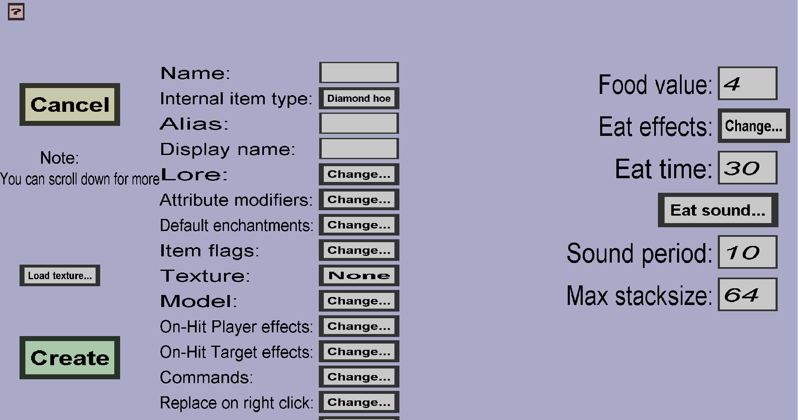

The food edit menu can be used to create custom food or custom drinks. These custom items can be eaten (or drunk) by players and can restore hunger and/or give potion effects to these players. If you just started creating new custom food, it should look like this:
All properties on the left of this page are explained here. The properties on the right of this page are unique to custom food (and drinks) and are explained below:
The food value determines how much 'hunger' will be recovered when eating this custom food. Every point stands for a half 'meat' icon in the hunger bar of the player. For instance, if you keep the value 5, players who eat it will recover 2 and half 'meat' icon in their hunger bar (which is 25% of their hunger bar). If you choose 20, players will restore their entire hunger bar upon eating the custom food. If you choose a negative value, players will get more hungry rather than less hungry upon eating this custom food.
The eat effects are the potion effects that will be given to players who eat this custom food (or your custom drink). You are allowed to keep this list of potion effects empty.
The eat time is the time (in ticks) that players need to eat (or drink) this custom food. Just like regular food, players will need to keep holding their right mouse button while eating, or the eating will be cancelled. Unfortunately, the tracking of right-clicks is imprecise (so it is possible that players will finish the eating if they release their mouse button when they nearly finish eating it).
The eat sound will be played while players are eating this custom food. By default, this is Entity generic eat, which is the same sound that is played while eating vanilla food. If you want to make a custom drink instead, you should change it to Entity generic drink. You are free to choose other sounds as well.
The sound period determines how often the eat sound will be played. It will be played every sound period ticks while players are eating this custom food. For instance, if you keep this value 4, the eat sound will be played 5 times per second.
The max stacksize determines the maximum stacksize of item stacks of this custom food in the survival gamemode. It must be an integer between 1 and 64. The stacksize will be decreased by 1 each time the player finishes eating this custom food.